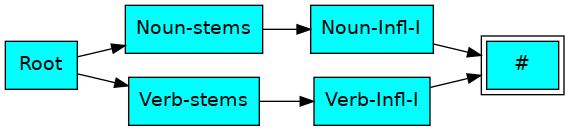
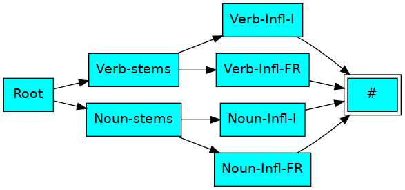
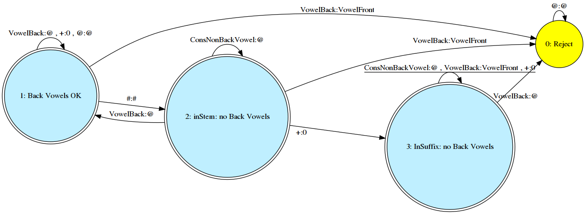

Morphology Tutorial: Part I
From NLP Course Wiki
(Roman Yangarber, University of Helsinki, 2016-2021)
In class, we introduced the tools you'll need for this assignment and project:
HFST
The tools are installed from the resource repositories, found under:
http://www.ling.helsinki.fi/kieliteknologia/tutkimus/hfst/index.shtml
https://github.com/hfst/hfst/wiki/Download-And-Install
The small example grammars we developed in class are under the directories/folders Finnish-00/, Finnish-01/, ...
For further information on making rules, please see HFST manual in the repository.
Tool setup
You can either find an executable distribution from the HFST site, or
download the source and compile it according to the download + install
instructions for your platform (Linux, MacOS, Windows, etc.).
We will create two kinds of files:
-
finnish.lexc will contain the lexicons, e.g., the Noun and Verb
lexicons,
finnish.twol will contain the two-level rules.
-
hfst-lexc: to compile your lexicon into a transducer.
hfst-twolc: to compile your rules into a transducer.
hfst-compose-intersect: to intersect the rules, and compose
them with lexicon — the complete transducer. Note, the resulting
transducer will be a generator.
hfst-invert: to flip the tapes: to convert the generator to an
analyzer.
-
hfst-fst2fst: to optimize your analyzer (for faster access).
hfst-fst2strings: for debugging: to produce all possible
strings that your analyzer will recognize.
hfst-fst2txt: to use with the supplied python scripts (which
are in the scripts/ folder) to produce graphs of the analyzer at the
detailed character level.
The last command — hfst-lookup — takes an analyzer and
allows you to type in words one at a time to be analyzed.
(It also works with a generator: you give the lexical forms, and it
generates the words.)
To run the optimized analyzer use this command in shell:
hfst-lookup finnish-analyzer.hfstol
To make using these tools much easier, you have a makefile in each
example directory. This lets you to use simple commands from a command shell:
-
make: compiles everything.
make check: prints out all strings recognized by the
transducer.
make graph-FST: creates a high-level picture (.png) of the
transducer.
make graph-characters: creates a low-level, very detailed
picture of the transducer.
A Brief Tutorial on Two-Level Morphology, Using HFST
Note: this tutorial is not a complete reference, It is intended only to give the student an introduction into designing a morphological grammar using Two-Level morphology.
In this tutorial we will go through the basic steps, starting with a simple lexicon and creating more complex lexicons and adding rules.
The resulting setups for HFST are in the course repository, under the directories called Finnish-*/
The sections marked by (***) are somewhat more advanced, and may be skipped on first reading. (They will be useful later, if you decide to do the project on morphology, or some of the extra-credit assignments.)
Basic grammar (00)
- Begin with defining morphotactics: in finnish.lexc construct a basic lexicon, consisting of "simple" nouns (Noun-stems lexicon) and verbs (Verb-stems lexicon), and their inflectional paradigms (Noun-Infl-I and Verb-Infl-I). These words do not need any morpho-phonological changes, so the rule file has no rules.
nouns: talo, savu
verbs: palaa, ajaa
For nouns we consider several cases, in the singular number (excluding partitive and illative case). For verbs we consider only the present tense (excluding 3rd person singular for now).
Currently, our lexicon has a very simple structure.
The names in the oval nodes are the names of the sub-lexicons, as defined in the *.lexc files. For example, the file finnish.lexc contains
- all noun stems that belong to the Noun-stems sublexicon
- all morphemes that belong to the Noun-Infl-I sub-lexicon, basic case endings for nouns (and adjectives!)
- all verb stems that belong to the Verb-stems sublexicon
- all morphemes that belong to the Verb-Infl-I sub-lexicon, for person and number in the present tense,
- two special sub-lexicons Root and # — the initial and final states of the automaton.
By convention, lexicons names are Capitalized. Root is a special keyword in HFST. It identifies the main LEXICON, so we cannot use it, e.g., as the name of another lexicon.
This lexicon structure will suffice for the first part of the tutorial. It will be extended in Morphology Tutorial, Part II.
Since there are no morpho-phonological alternations for these word forms, we don't need any rules, and the rule file has no rules.
This grammar is in directory Finnish-00/.
Vowel Harmony (01)
- Add nouns and verbs to lexicon that contain front vowels (no back vowels)
nouns: isä, hissi
verbs: kysyä, kestää
The simplest and most trivial way to handle these new words is through the lexicon: we could simply add another noun class (Noun-Infl-FR) and another verb class (Verb-Infl-FR) to the lexicon, to cover nouns and verbs that contain only front vowels, and add inflection lexicons for them.
Note, that we can produce this graph by running the command:
make graph-FST
We can also produce a completely detailed, character-level graph of the entire transducer by running the command:
make graph-characters
We would still not need to use any rules.
The resulting grammar is in directory Finnish-01/.
Note that this requires changes to the all lexicons (with the exception of the Root, which does not change).
However, this is highly inefficient:
- the endings in Noun-Infl-I and Noun-Infl-FR have a great deal of overlap,
- the entries for the verbs differ only is in the infinitive and 3rd person plural (vat/vät).
- this approach results in MULTIPLYING OUT the cases: we will quickly end up with huge lexicons, which are mostly redundant.
To see what we mean by multiplying out, consider what would happen if we used the same approach to handle consonant gradation, which we will do in the next section, for grade weakening tt → t in some positions, like katto (nominative)/katon (genitive). If we use the same approach, i.e., create a new class for nouns that have strong grade -tt- in their stems, which goes to weak grade -t-, we would now need 4 classes:
- nouns with strong grade and back vowels in stem,
- nouns with strong grade and no back vowels in stem,
- nouns with weak grade and back vowels in stem,
- nouns with weak grade and no back vowels in stem,
i.e., 2 x 2 separate classes just for nouns (and another 4 for the verbs), which are very similar.
Morphological Rules (02)
A more clever approash is:
- Add morpho-phonological rules to handle vowel harmony.
This will allow us to keep the inflectional lexicons for nouns and verbs free of repetition, and specify only when the original (back) vowels in the ending morphemes need to be changed to front vowels. Important: this will work for both nouns and verbs.
This requires a two-level rule. How do we know what rule to write?
We need to add three feasible pairs to the alphabet: a:ä, o:ö, u:y. Note that the colon separates between the symbols on the two tapes. Note also that in writing the rules, the colon may be omitted on either side (or both side) which means that ANY symbol can occur there.
We observe that — for our current lexicon of nouns and verbs — if we have a back vowel, from the set Vback, it changes to a front vowel, in Vfront, if and only if:
- it is in the suffix — i.e., there was a morpheme boundary +:0 preceding the place of the change; and
- prior to the morpheme boundary — i.e., in the stem of the noun or verb — NO back vowels were encountered on the input: only consonants, front vowels, or neutral vowels (as in hissi) were observed in the stem — from the beginning of the word up to the morpheme boundary.
This if-and-only-if statement is encoded in a two-level rule like:
"Vowel FRONTING # 1a"
VowelBack:VowelFront <=> # [ VowelFront: | VowelNeut: | Cons: ]+ %>: :* _ ;
Notice that inside the square brackets we have three kinds of symbols: front vowels, neutral vowels or consonants — i.e., everything except the back vowels. Another way to write the rule is to create a new set of symbols, ConsNonBackVowel, which will contain all symbols except the back vowels, and write the rule:
"Vowel FRONTING # 1b"
VowelBack:VowelFront <=> # ConsNonBackVowel+ %>: :* _ ;
The set CVnonback is defined to contain all consonants and all non-back vowels,
i.e., the front vowels y ä ö, and the neutral vowels i and e.
The alternative Fronting rules 1a and 1b are completely equivalent. The only
difference is that when one of the subsets Cons, VowelFront
or VowelNeut is modified, we must also remember to modify the new "artificial"
subset, ConsNonBackVowel, which is somewhat inconvenient.
From Rule to Transducer: Examine the transducer
Note that these rules are compiled by hfst-twolc compiler into actual finite state machines (FSTs). It is possible to print out the transducer, or to graph it, using additional HFST tools (see documentation). For example, the transducer for the Vowel Harmony rule "Fronting 1b" would look like this:
VowelBack VowelBack # ConsNonBackVowel + @
VowelFront @ # @ 0 @
1: 0 1 2 1 1 1
2: 0 1 2 2 3 2
3: 3 0 3 3 3 3
This is a machine with three states: 1, 2, 3, which are all accepting states (marked by colon after the state name). An additional state "0" is always a rejecting state. The transition table specifies how the machine moves from state to state, while reading / writing pairs of symbols on the two tapes: deep tape on top, surface tape on the bottom. We can plot this machine as:
The symbol @ in this table indicates "any other symbol" — not covered by transitions on the left.
We start in state 1, the initial state. We stay in state 1, until we encounter #:# the beginning of the word, at which point we move to state 2 (nothing before #:# can be seen on input).
Once in state 2: we wait for a morpheme boundary +:0, which moves us to state 3. Seeing a VowelBack:@ with VowelBack on the lexical tape moves us back from 2 to 1, where everything is accepted, UNLESS we encounter the pair VowelBack:VowelFront, which is rejected.
So state 1 can be summarized as: either we having seen nothing yet (still waiting for #:#), or we HAVE seen a back vowel, (in which case fronting cannot occur).
State 2 can be summarized as: we are between the start of the word and the first morpheme boundary — i.e., we are inside the stem, and making sure we see no back vowels.
In state 3, we are in the suffix, accepting front and neutral vowels and consonants, and more morpheme boundaries. VowelBack:VowelFront is allowed, but back vowel moving to anything else is rejected.
HFST Rule Notation
Each two-level rule must begin with a name, which is a string in double quotes, such as "Vowel Fronting # 1a", above.
HFST rules use this notation for regular expressions (REs):
-
a | b — OR operator,
a* — a can appear zero
or more times,
a+ — a can appear one
or more times,
(a) — a
is optional: can appear zero or one time,
[ a | b | ... ] — grouping,
# — word boundary symbol:
beginning or end,
%> — morpheme boundary
symbol:: this is not a special reserved symbol, but is defined inside
the .lexc file as a multi-character token.
_ — indicates the exact
position in the environment / context where the rule applies.
-
<=> — if and only if:
the corresponding can occur if an only if the context occurs.
=> — only if: the
correspondence can appear only in this context — but other
correspondences can occur in this context as well.
<= — if: the
correspondence must always appear in this context — but the
correspondence can also occur in other contexts.
/<= — not if: the
correspondence must never appear in this context — but it can occur in
other contexts.
The colon separates between the input tape on the left, and the output tape on the right. Either input or output (or both) can be omitted, which means, that any symbol can appear on that tape. Therefore, [ a | b | c ]+ means: an occurrence of a or b or c — [a | b | c ] — which can be repeated one or more times — +. A star * indicates a repetition of an expression zero or more times. Thus :* means any input-output symbol pair — : — appearing zero or more times.
Note that the rule must end with a semicolon. If you forget the semicolon, HFST compiler will crash, and may not even produce a sensible error message, so remember to check the semicolons, in case you see an unexplained crash.
This results in the grammar in directory Finnish-02/.
Note, the lexicon files (.lexc) are back to their simpler form as in Finnish-00/. In particular, finnish.lexc creates no new noun or verb states, or sub-lexicons, as we did in Finnish-01/ — the effect of vowel harmony is achieved instead through this one spelling rule.
Note, at some point you may find that you do need to create a new, class for nouns or verbs with a very different paradigm — set of endings that a class of nouns can accept. We will see examples of this in Tutorial, Part II. However, that approach should be used with care, because of its potential for multiplying out.
Improving the rule (Advanced Version ***)
There are a few problems with writing the rule in the above fashion,
- the rule may be too rigid: it specifies the restrictions in both directions, which we may need to relax as the grammar grows more complex to cover more and more cases.
For now it works, but you may run into problems with it when your grammar will get more complex.
A general practice (also mentioned in the HFST manuals), may be better to split up this somewhat complex and rigid rule into a few simpler, more flexible rules.
The first split is automatic: by definition, the rule fronting-1 is equivalent to these two rules:
!! version 2: simpler version: split up:
"Vowel FRONTING # 2a"
VowelBack:VowelFront <= # [ VowelFront: | VowelNeut: | Cons: ]+ %>: :* _ ; !! 2a
"Vowel FRONTING # 2b"
VowelBack:VowelFront => # [ VowelFront: | VowelNeut: | Cons: ]+ %>: :* _ ; !! 2b
On further observation, we notice that rule fronting-2b can be made shorter (and simpler):
It is saying that a back vowel must be realized as a front vowel only in this environment. But that is the same thing as saying:
A back vowel must NEVER be realized as a front vowel if we have seen a back vowel — on the surface level — anywhere before the morpheme boundary — i.e., either in the stem of the word, or in an earlier suffix.
"Vowel FRONTING # 3b"
VowelBack:VowelFront /<= :VowelBack :* %>: _ ; !! 3b
Actually, we don't even need the morpheme boundary: if there was a back vowel on the surface tape anywhere earlier, then Vback ← Vfront change is forbidden:
"Vowel FRONTING # 3b"
VowelBack:VowelFront /<= :VowelBack :* _ ; !! 4b
DANGER: However, these two rules together, 2a and 4b, only specify that the fronting (the back-to-front change, e.g., a:ä)
- must occur in the environment of 2a, and
- must not occur in the environment of 4b.
They say nothing about other environments!!!
That means that, if neither of these environments occurs, then a back vowel has a choice (!!!): it is free to go either to a back or to a front vowel (since feasible pairs exist for both in the alphabet, e.g., a:a and a:ä).
We certainly don't want that. That would accept, e.g., tälö as a valid surface form for talo.
Thus we must exclude illegal, arbitrary back-to-front changes. One way to do that is to insist that a back-to-front change can never occur in the stem, but only after one (or more) morpheme boundary has been seen:
"Vowel FRONTING # 1c"
VowelBack:VowelFront => %>: :* _ ; !! 1c
The next modification is rather subtle: for Rule 2a it is better to make a change in the environment, from
"Vowel FRONTING # 2a"
VowelBack:VowelFront <= # [ VowelFront: | VowelNeut: | Cons: ]+ %>: :* _ ; !! 2a
to
"Vowel FRONTING # 3a"
VowelBack:VowelFront <= # [ :VowelFront | :VowelNeut | :Cons ]+ %>: :* _ ;
That is, the requirement on the surface tape :VowelFront, etc. in 3a is more specific than VowelFront: in 2a. Rule 3a says: vowel fronting must take place as long as we only observed non-back vowels on the surface tape, -- i.e., regardless of how these vowels are represented on the lexical tape (whether front or back)!
Another way of saying this is: as long as all vowels we saw previously on the surface were non-back, they must continue to be non-back, even if some of them used to correspond to back vowels on the lexical tape.
Again, for the current, tiny lexicon, it would not matter. But that is only because, for now, our lexicon structure is quite trivial:
Stem + Suffix #
However, you'll see a difference as soon as you allow multiple suffixes, e.g.,
Stem + Suffix1 + Suffix2 #
Consider if we wanted to eventually recognize isä-llä-nsä-kö. On the lexical level, we would wish to represent this as isä-lla-nsa-ko.
However, version 2a would fail to enforce vowel harmony for the second suffix -nsa, because a back vowel occurs before it on the lexical tape — namely, the a in suffix -lla.
However, Rule 3a will work, since on the surface level -lla is realized as -llä, and no back vowels appear on the surface tape prior to a:ä in -nsa.
Illative case: vowel doubling (03)
- Let's now add the handling of the Illative case for the nouns we already have in the lexicon:
Base Illative
_____ ________
talo talo+on
savu savu+un
isä isä+än
hissi hissi+in
We see that in the Illative case, the final vowel is doubled.
(Note, this still does not handle more complex cases, like maa+han, huonee+seen, etc., but those can be handled later).
Once again, we could try to handle this through the lexicon (by specifying different continuation classes for all these nouns), but that would mean multiplying out 8-fold, so let's try to avoid that.
One way to solve this problem is through a trick: introduce a new symbol into the alphabet, V, which:
- can only appear on the lexical tape; it is a symbol that will never appear in a surface word.
- has this meaning: double the vowel immediately preceding across a morpheme boundary
- can map to all the possible vowels on the surface tape: i.e., we must add all feasible pairs for V:a V:e V:o V:ä, etc.
Note, by convention, we will introduce new symbols to the alphabet (typically for the lexical tape), by using upper-case letters. Note that we should add the new symbol to the Vowel set.
We must also add eight short rules to handle all possible vowels doublings. This is a little awkward, but there is no other way with finite state machines: because they have no memory of the past, you cannot directly express a command like "duplicate the vowel you just saw previously".
However, these rules are quite easy, almost identical, and short and fast:
"Double a" V:a <=> :a %>: _
"Double e" V:e <=> :e %>: _
"Double i" V:i <=> :i %>: _
"Double o" V:o <=> :o %>: _
"Double u" V:u <=> :u %>: _
"Double y" V:y <=> :y %>: _
"Double ä" V:ä <=> :ä %>: _
"Double ö" V:ö <=> :ö %>: _
As a convenience, HFST lets us abbreviate the above 8 rules as a single rule, using the where ... matched clause:
"VOWEL DOUBLING"
V:Vx <=> :Vy %>: _ ;
where Vx in ( a e i o u y ä ö )
Vy in ( a e i o u y ä ö )
matched ;
This results in the grammar in directory Finnish-03/.
Note: we made only a single change to the Noun-Infl-I lexicon: added the entry for the Illative case.
Batch testing and validation
Note, that by now testing the various noun and verb forms in the HFST analyzer becomes tedious: you have to enter many examples each time you make a change to the lexicon or the grammar, to make sure nothing is broken.
It is easier to create a "validation" file for the recognizer, finnish.yaml, and use the HFST validation commands, (see HFST documentation). Simple validation and troubleshooting commands appear in the Makefile in each directory. For example, to see all strings that the analyzer will recognize, you can use the command:
make check
which simply runs the HFST command:
hfst-fst2strings finnish.lexc-analyzer.hfst
Final -i/-e- alternation in nouns (04)
- Add nouns that end in -i — the "native" nouns — but that behave differently from those we have in the lexicon so far (such as hissi):
Noun: kivi, ovi
These nouns form a new class of nouns, since the stem-final -i changes to -e- in the oblique cases (oblique cases are all cases that are not nominative). In linguistic terms, this distinguishes the "native" vs. the "borrowed" nouns that end in -i.
This class can also be implemented without creating an actual new set of endings — since the case endings are exactly the same as for talo, isä, etc., only the stem vowel is different, depending on whether the case is nominative or oblique.
A neat way to do that is, again, by introducing a new, special symbol to the alphabet: let's define I (capital letter i) to be the "deep" shape of the stem-final vowel in these native Finnish nouns. Note that we should also add I to Vowel, VowelNeutral subsets, for completeness, so rules and lexicons work when they are extended in the future.
A note about Tapes
Notice, this deep level is intermediate — it is between the lexical level and the surface level. In the lexicon, these I symbols will appear on the output tape (the input being the Lexical Tape), but in the rules, the I symbols will appear on the input tape (the Surface Tape). When the lexicon is composed with the rules, this middle "deep" tape disappears, and only the Lexical (input) and Surface (output) Tapes remain. (Note, as we said before, this is the tape order for a generator, and that these will need to be flipped to obtain an analyzer.)Then, we state that I can be realized only through one of two feasible pairs:
I:i for nominative case
I:e otherwise (oblique cases)
This will also require a rule that says that I is realized as i iff it is word-final:
"Native -i nouns"
I:i <=> _ %>:* # ;
Now we can add kivi and ovi to the Noun-stems lexicon, as SURFACE forms kivI, ovI.
This results in the grammar in directory Finnish-04/.
Note that this required no changes to the Noun-Infl-I lexicon.
- Batch validation:
Note: after compiling the new lexicon and rules, we can do a quick batch validation — all previously checked words must still pass the validation.
Then the newly tested forms for kivi and ovi can be validated, and note that vowel harmony still works correctly: kive-llä and ove-lla.
Consonant Gradation: tt → t (05)
- Add nouns and verbs to the lexicon that contain some consonant gradation
Nouns Verbs
_____________ __________________
katto / katon nukuttaa / nukutan
tyttö / tytön heittää / heitän
Note that this required no changes to the Noun-Infl-I or the Verb-Infl-I lexicons.
- Add morpho-phonological rules for handling the consonant gradation tt → t.
We need to observe under what conditions the surface form has the strong grade (tt) and under what conditions the weak grade (t):
STRONG: WEAK:
_______ __________________________________________
katto kato-n, kato-lla, kato-ksi, ...
katto-na
nukutta-vat nukuta-n, nukuta-t, nukuta-mme, nukuta-tte
To summarize: the grade of the consonant is strong if the syllable is open — i.e., the syllable ends in a vowel. If we indicate the syllabic boundary with a bar | then our data looks like this:
STRONG: WEAK:
_______ _____________________________________
kat|to| ka|ton, ka|tol|la, ka|tok|si, ...
kat|to|na
nu|kut|ta|vat nu|ku|tan, nu|ku|tat, nu|ku|tam|me, nu|ku|tat|te ...
Note: syllable boundary is very different from the morpheme boundary, and is totally independent of it! Therefore, we can model this change as follows:
- 1. On the lexical tape, we will always say that the grade is strong: tt
- 2. On the surface tape, we will say that the grade is strong iff
the syllable is open: i.e., after the stem vowel,
- the word ends, or
- there is a consonant followed by a vowel — NOT by two consonants.
Equivalently, we can use the inverse of rule 2 instead, which is:
- 2a. On the surface tape, we will say that the grade is weak iff the
syllable is closed: i.e., after the stem vowel, there is a morpheme boundary,
plus a consonant, after which:
- the word ends, or
- there is another consonant -- NOT a vowel.
"Consonant gradation tt->t"
t:0 <=> t:t _ Vowel %>: Cons [ Cons | # ] ; !! tt-t gradation version 1
Note, we must remember to define the set of symbols called Vowel, and place all vowels into it, including the special symbol V, which we made for vowel doubling !
Relaxing the rule (***)
Just as in the case of the vowel harmony rule, this will be too rigid for when we will wish to expand the grammar. For example, we will wish to implement nouns with multiple suffixes, such as the negative -ton-/-ttom- suffix, in katoton, katottoman, etc., see Morphology Tutorial, Part II. Then, this alternation tt->t will need to take place in a new environment: inside the suffix morpheme -ton-/-ttom-, which contains no morpheme boundary between the vowel and the consonant. To accommodate this, we will have to break the overly rigid tt->t gradation rule into pieces (which says the change may occur ONLY in this environment!)
The basic strategy for simplifying the rule is this: try to
- treat each of the two directions <= and => separately, and
- treat each side of the environment (left and right) separately.
As we modify the environment of the rule, the main thing to keep in mind is these basic principles:
- <= +specialize: adding elements to the environment of a <= rule specializes the rule (makes it apply in fewer cases)
- => +generalize: adding elements to the environment of a => rule generalizes the rule (makes it apply in more cases)
As an obvious consequence,
- <= -generalize:removing elements from the environment of a <= rule generalizes the rule
- => -specialize:removing elements from the environment of a => rule specializes the rule
This is not obvious, and may require some thought to clarify. Work with abstract example rules:
- a:b <= ___ e
- a:b <= ___ e f
It is easy to see that the shorter rule is more general. On the other hand, between
- a:b => ___ e
- a:b => ___ e f
the longer rule is more general. To see why, observe finally that these last two rules are respectively equivalent to
- a:b /<= NOT (___ e)
- a:b /<= NOT (___ e f)
and the longer rule is more general: it forbids the change in more environments. For example, if the environment is ___ e x, then the shorter rule does not apply, whereas the longer rule does (because ___ e x is NOT ___ e f).
That is the theory and philosophy. Now we begin to apply it. Again, we start with the simplest split, into two directions:
"Gradation tt->t: 2a" t:0 <= t:t _ Vowel %>: Cons [ Cons | # ] ;
"Gradation tt->t: 2b" t:0 => t:t _ Vowel %>: Cons [ Cons | # ] ;
Now, version "2a: IF" gives just one environment where the weakening must occur. We will later add other environments -- for handling suffixes like -ton-/-ttom- -- where the morpheme boundary is not present, but the weakening must still occur.
In the other direction, Version "2b: ONLY IF" is certainly too rigid: it says the weakening may take place ONLY in this environment. We should anticipate that we will want to allow the grade to weaken in other environments as well, not only in closed syllables.
For example, ka|to|ton the second syllable appears to be open on the surface, yet the grade of t is still weak!
Can we remove "2b: ONLY IF" altogether? Certainly not, because "2a: IF" controls only when the weakening MUST occur; it says nothing about where it is allowed to occur. In fact, if we remove "2b: ONLY IF", the weakening will be allowed to occur absolutely anywhere. That is, without "2b: ONLY IF", the machine would accept "kato" and even "kao", and analyze both of these surface forms as "katto" on the lexical level, which is absurd.
We should therefore specify under what conditions the weakening is disallowed. The following rules will replace "2b: ONLY IF".
We will start with one simple restriction: allow only the SECOND of two consecutive t symbols on the lexical tape to disappear during the weakening.
"Gradation tt->t: 2c" t:0 /<= _ t: ;
This says that the first t in a pair of t symbols must never disappear. Note that the second t in the environment may be mapped to ANYTHING on the surface level (i.e., this will mean either t or 0, for now, since these are the only two feasible pairs for t on the surface level, at the moment. But there will be more alternatives coming later!)
This is a good start, but the machine will still accept invalid forms like
heitävät
kato
now with the second t deleted -- since deleting the second t is not restricted in any way. So, we should restrict the deletion of the second t:
"Gradation tt->t: 2d" t:t <= _ Vowel: (%>:) [ # | Vowel: | Cons: Vowel: ] ;
Recall that The notation (%>:) means that the morpheme boundary is optional.
This rule says that t is unchanged — it does not undergo any weakening — if it appears in an OPEN syllable, viewed from the LEXICAL level: i.e., if on the lexical level it is followed by a vowel, plus an optional morpheme boundary, plus:
- either the end of word, as in katto,
- a vowel, as in sattua or heittää,
- or a lexical consonant followed by a lexical vowel, as in katto+na
Now kato and heitävät are rejected.
However, surface kesän is still accepted as lexical kestä+n !
That suggests that we must treat t after s specially — it can never be removed:
"Gradation tt->t: 2d" t:t <= _ Vowel: (%>:) [ # | Vowel: | Cons: Vowel: ] ;
s: _ ;
Note, how we can simply append additional environments to an existing rule.
One last problem: with these rules, some rather odd words will still be accepted as valid, e.g., heittä and heitä. (Why?)
To see why they are accepted, try recognizing them, you'll see that they are analyzed as having a final -t suffix (the one we use for 2nd person singular).
(Why? Try to see how the rules accept this. If you don't succeed, try the HFST command make check above, to see all acceptable strings.)
To avoid this problem, we must limit where t is permitted to disappear:
"Gradation tt->t: 2e" t:0 => t _ ; !! delete only SECOND t
This simply says, that if the t (on the lexical tape) ever disappears, then it MUST BE the second t of a pair of consecutive lexical t symbols, and nowhere else.
This results in the grammar finnish-v2.twol/ in directory Finnish-05/.
To summarize, we end up with the following set of rules:
!! tt->t gradation
"Gradation tt->t: 2a" t:0 <= t:t _ Vowel %>: Cons [ Cons | # ] ; !! 2a: must remove second t in closed syllable
"Gradation tt->t: 2c" t:0 /<= _ t: ; !! 1c: first t must never be removed
"Gradation tt->t: 2d" t:t <= _ Vowel: (%>:) # ;
_ Vowel: (%>:) Vowel: ;
_ Vowel: (%>:) Cons: Vowel: ;
s: _ ; !! t unchanged in open syllable or after s
"Gradation tt->t: 2e" t:0 => t _ ; !! only the SECOND t can be removed
This may seem like a lot of rules, to replace the single rule version 1. But these rules are substantially simpler, and it will turn out to be much more flexible, much easier to generalize these rules to other many kinds of weakening that a lexical t can undergo.
Weakening t → d (06)
Now we handle another type of weakening: the gradation t → d.
pöytä / pöydän
löytää / löydän
The best strategy at this point is to simply
-
add these two stems to the Noun and Verb lexicons, and
run make and make check, to see
how the current analyzer will (mis)handle these stems.
We will try to re-use the rules we wrote for tt->t as much as possible for this weakening. The rules 2c, 2d and 2e specify the conditions when t must NOT weaken — and that will cover both tt->t0 weakening as well as t->d weakening.
First, we need a rule that will substitute for 2a, above:
"Gradation tt->t: 2a" t:0 <= t:t _ Vowel %>: Cons [ Cons | # ] ; !! must remove second t in closed syllable
This can be done as follows:
- add a new feasible pair for t:d
- create a rule similar to 2a, that specifies when the weakening t:d MUST occur:
We can't just say:
"Gradation t->d: 6a" t:d <= _ Vowel %>: Cons [ Cons | # ] ; !! must weaken t in closed syllable
because that will conflict with Rule 2a above. What we want to say is: t:d must occur if it is not preceded by t.
In any case, HFST does not allow us to say ~t to mean NOT t. We could make a set containing everything except t, called NotT, and make the rule:
"Gradation t->d: 6a" t:d <= NotT: _ Vowel %>: Cons [ Cons | # ] ; !! must weaken t in closed syllable
But we should not do that for several reasons:
- t:d is too restrictive: we will actually weaken t to l if preceded by l, to r if preceded by r, and to n if preceded by n. We will need more flexibility in the future!
- Such a solution is not elegant. And every time we need extend the alphabet, we will need to update the set NotT.
Notice, in fact, that we are already quite close to having the functionality we are trying to achieve, without creating any new rules: all we need to do is make rule 2a LESS restrictive!
Creating a feasible pair will make t:d a possibility. Now we can try to make the following change:
!! REPLACE tt->t gradation rule 2a: 6a: must weaken t in closed syllable
"Gradation t->d: 6a" t:Tweak <= _ Vowel %>: Cons [ Cons | # ] ;
We define Tweak to be a subset, containing the WEAK grades of t. For now it will contain just d and 0 (but we can later expand it to include also l for lt->ll, and r for rt->rr)
(Think about why!)
Note that we still have rule 2e from above, which says that a lexical t can be weakened to 0, ONLY if this lexical t is preceded by another t, and nowhere else.
"Gradation tt->t: 2e" t:0 => t _ ; !! only the SECOND t can be removed
It functions as it did before. In addition, now this rule also implicitly implies that in environments not covered by this rule, whenever some other rule forces a weakening of t it will have to be t->d. That may be a bit too much, since we will later need other kinds of weakenings. So better make it explicit. In what environments do we allow t->d? If it is preceded by a vowel, or by h, as in tähti/tähden.
"Gradation t->d: 6f" t:d => [Vow | h] _ ; !! legal environments for t:d
This results in the grammar in directory Finnish-06/.
(***)
!!! Note 1: by adding the new feasible pair t:d we inadvertently broke rule 1c, above, which said that we allow only the SECOND one of two consecutive t symbols on the lexical level to disappear during the weakening.
RULE t:0 /<= ___ t: ;; tt->t gradation 1c
Now since t:d is another possible alternative weakening, rule 1c must be strengthened to disallow t:d as well.
(Question: Why?
Think about it before looking at the answer, below.)
(Answer:
because otherwise it will accept illegal surface forms, like nukudtavat as lexical nukuttavat.)
The slightly stronger rule might look like this:
RULE t:Tweak /<= ___ t: ;; tt->t gradation 2c
Of course, an equivalent way of saying this is:
RULE t:t <= ___ t: ;; tt->t gradation 2c
!!! Note 2: the new rule, 5a, broke rule 1f, which we had made earlier to prevent t weakening after s:
RULE t:t <= s: ___ ;; tt->t gradation 1f
So now kestän is rejected anyway (by 5a).
This should be fixed. (Left as an exercise. One way, is, again to create a set of everything except s and put that in the left environment of t:Tweak rule. Not elegant, but may be necessary because HFST supports no negation for now... A better way is to specify explicitly a slightly narrower set of environments, in which the weakening must occur, and which excludes environments with a preceding s.)
Left for the reader
- Handle additionally, for the verbs already in the lexicon:
Imperative, 2nd person singular:
kysyä / kysy (easy)
pitää / pidä (harder)
Closing Note
The resulting simple grammar is certainly far from being complete by any means. There remain a very large number of features that still need to be incorporated into this grammar before it can be used for real morphological analysis.
There is no single "correct" answer to solving these kinds of morphological problems. Most morphological phenomena can be modeled in several different ways, with different rules. In comparing different rules for a given morphological phenomenon, we typically care not only about correctness, but we pay attention to the rules' generality, and also to their simplicity, and elegance.
The purpose of this tutorial is not to specify "correct solutions", but to introduce the student to the process of designing morphological rules and lexicons.
Lastly, the grammar we have designed so far leaves some gaps: it will still
- accept some illegal surface forms, and
- reject valid words (those involving -st- as in kestän).
It is left as an exercise to identify these and correct them, by adjusting the rules. (Solutions in Tutorial, Part II).